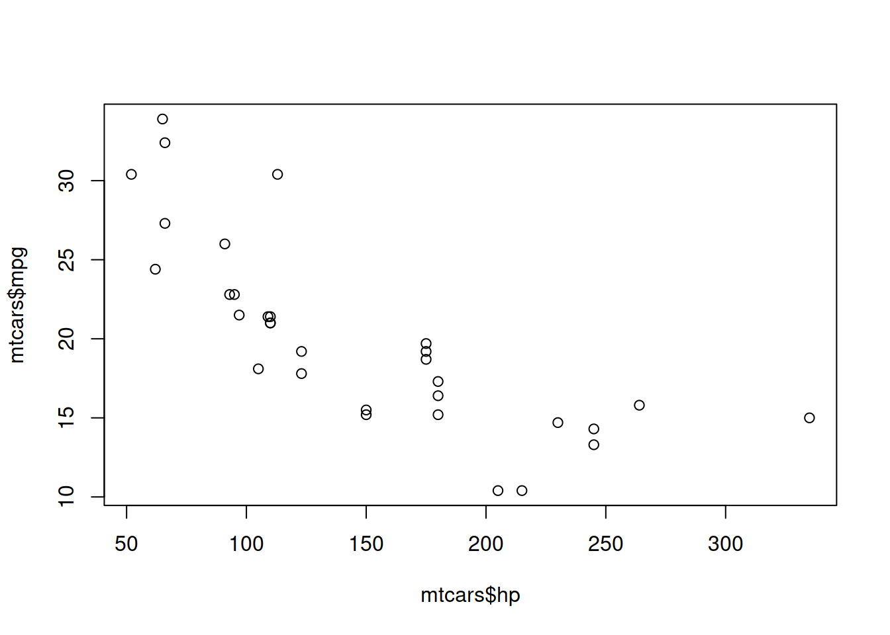
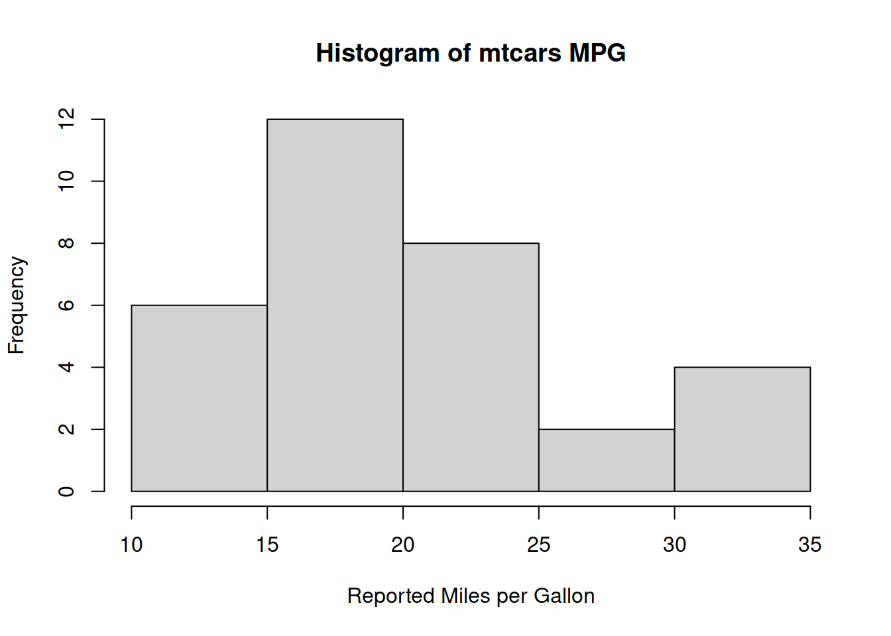

Graphing Lab
Example Data Set mtcars
Like in the introduction lab, we will be using the mtcars data set to learn how to graph data in R.
Below is an excerpt of mtcars, displaying the first 6 cars in the list. The columns have been renamed, and some columns have been removed for ease of presentation.
| Make and Model | Miles per Gallon | Number of Cylinders | Displacement in Cubic Inches | Gross Horsepower |
|---|---|---|---|---|
| Toyota Corolla | 33.9 | 4 | 71.1 | 65 |
| Fiat 128 | 32.4 | 4 | 78.7 | 66 |
| Honda Civic | 30.4 | 4 | 75.7 | 52 |
| Lotus Europa | 30.4 | 4 | 95.1 | 113 |
| Fiat X1-9 | 27.3 | 4 | 79.0 | 66 |
| Porsche 914-2 | 26.0 | 4 | 120.3 | 91 |
Scatter plots - base
This first example uses the base plotting functions of R.
When making our plots, we will typically be referring to vectors of data within a data frame. We can start by making the most simple plot using one vector. This plot will us all of the values within the vector mpg, in the order of their appearance in the vector (from top to bottom in the data frame).
# A scatter plot of all of the values of mtcars$mpg
plot(mtcars$mpg)While potentially interesting, there is little value to plotting data this way. Our plots are improved by adding an additional axis for comparison. In this case, we can observe a scatter plot using mpg as our y axis and hpas our x axis. In R, we will use the ~ character to look at the values in one vector by the values of another vector. This scatter plot will plot the mpg of each car based on its reported horsepower.
Making graphs such as these can be helpful for generating and testing hypotheses about our data, and are useful in exploratory data analysis.
# A scatter plot of all of the values of mtcars$mpg by their values in mtcars$hp
plot(mtcars$mpg~mtcars$hp)
Based on this graph, it looks like there is a possible relationship between a cars mpg and its horsepower! We can add proper axis labels and a title to make this graph more presentable to our team or host site.
# A scatter plot of all of the values of mtcars$mpg by their values in mtcars$hp
# This version has axis labels and a title
plot(mtcars$mpg~mtcars$hp,
main = "MPG and HP Scatter Plot",
xlab = "Horsepower",
ylab = "Miles per Gallon"
)Scatter plots - ggplot2
This next example uses the plotting functions of ggplot2. It has some notable advantages over using the base plotting functions; however, the function will be written differently to functions we have used so far. We will start by remaking the scatter plot of mpg and horsepower.
Note that, instead of using a vector reference (using the vector operator $), we are using the actual names of the columns inside of the data frame mtcars. When plotting our data, we should keep our data inside one data frame whenever possible.
Also note, the + operator at the end of the first line of code, and the indentation at the second line. This indicates to R that there is more instruction coming, and that R should interpret these lines of code together.
# A scatter plot of all of the values of mtcars$mpg by their values in mtcars$hp
ggplot(mtcars, mapping = aes(x = hp, y = mpg)) +
geom_point()Just like before, it looks like there is a possible relationship between a cars mpg and its horsepower. We can add proper axis labels, a title, and a subtitle to make this graph more presentable to our team or host site. Using ggplot2, we have a lot more control over our graph generation, and can add additional labels or design themes to our graphs. However, this increased control has made our function more complex.
# A scatter plot of all of the values of mtcars$mpg by their values in mtcars$hp
# This version has axis labels, a title, a subtitle, and optional formatting for each
ggplot(mtcars, mapping = aes(x = hp, y = mpg)) +
geom_point() +
labs(x = "Horsepower", # x axis label
y = "Miles per Gallon", # y axis label
title = "Fuel Economy and Performance", # The Bolded Graph Title
subtitle = "Scatterplot of Fuel Efficiency Compared to Engine Performance " # The Graph Subtitle
) +
theme(plot.title = element_text(hjust = 0.5), # centers the title
plot.subtitle = element_text(hjust = 0.5), # centers the subtitle
panel.background = element_blank(), # Removes greyscale background
axis.line = element_line() # Adds black line border to x and y axis
)Linear Regression - base
After making scatter plots, we can begin to look at linear regression and correlation plots. Since we have suspected a linear relationship (i.e., not exponential), we can try to plot this relationship, and using the base R functions we can add this detail to our graph to begin to expand on our analysis and presentation of data.
# A scatter plot of all of the values of mtcars$mpg by their values in mtcars$hp
# With the linear relationship of mpg by hp
plot(mtcars$mpg~mtcars$hp)
abline(lm(mtcars$mpg~mtcars$hp))
Based on this graph, we can see pretty strong evidence for a linear relationship. Just as before, we will now add our labels to get this graph ready to present.
# A scatter plot of all of the values of mtcars$mpg by their values in mtcars$hp
# With the linear relationship of mpg by hp
# With labels
plot(mtcars$mpg~mtcars$hp,
main = "Simple Linear Regression of MPG~HP",
xlab = "Horsepower",
ylab = "Miles per Gallon"
)
abline(lm(mtcars$mpg~mtcars$hp))
Linear Regression - ggpubr
This next example uses the plotting functions of ggppubr. Just as before, it has some notable advantages over using the base plotting functions; however, the function will be written differently to functions we have used so far. ggpubr functions are written very similarly to ggplot2 functions, and the packages are designed to be inter-operable. We will start by remaking the scatter plot of mpg and horsepower, with the linear regression line.
# A scatter plot of all of the values of mtcars$mpg by their values in mtcars$hp
# With the linear relationship of mpg by hp
ggscatter(mtcars, "hp", "mpg",
add = "reg.line"
)
If we compare this graph to the previous one, the regression line should be the same. Now we can add our axis labels and title. The ggpubr package also lets us add some additional features to our graph, to make it much more informative and presentation-ready.
# A scatter plot of all of the values of mtcars$mpg by their values in mtcars$hp
# With the linear relationship of mpg by hp
# With labels, confidence interval, and correlation coefficient
ggscatter(mtcars,
"hp", # x axis data
"mpg", # y axis data
title = "Correlation Plot of Fuel Economy\nby Engine Performance", # title
xlab = "Horsepower", # x axis label
ylab = "Miles per Gallon", # y axis label
add = "reg.line", # add the regression line
conf.int = T, # add the confidence interval
cor.coef = T # add the correlation coefficient
) +
theme(plot.title = element_text(hjust = 0.5)) # centers the title)Boxplots - base
Boxplots are helpful for graphing descriptive statistics about our data. A boxplot will show us: the minimum and maximum values, the first and third quartile, and the median (the second quartile). A boxplot of one vector will show us information about its distribution.
# A boxplot of one vector, plotting simple descriptive statistics
boxplot(mtcars$mpg)
As before, our plot is improved by adding axis labels and a title.
# A boxplot of one vector, plotting simple descriptive statistics
# With labels
boxplot(mtcars$mpg,
main = "Boxplot of Miles per Gallon",
xlab = "Vehicles in mtcars",
ylab = "Reported MPG"
)Our plots are improved by adding an additional axis for comparison. In this case, we can observe a boxplot using mpg as our y axis and amas our x axis. In R, we will use the ~ character to look at the values in one vector by the values of another vector. This boxplot will plot the mpg of each car based on its reported transmission type.
Making graphs such as these can be helpful for generating and testing hypotheses about our data, and are useful in exploratory data analysis.
# A boxplot of two vectors, plotting simple descriptive statistics
# With labels
boxplot(mtcars$mpg~mtcars$am,
main = "Boxplot of Miles per Gallon by Transmission Type",
xlab = "Auto (0) or Manual (1) Transmission",
ylab = "Reported MPG",
)
By default, our graph will use the values provided for our x axis labels, and make both box plots the same color.
We can change the x axis labels and color-code the boxplots if desired.
# A boxplot of two vectors, plotting simple descriptive statistics
# With labels
boxplot(mtcars$mpg~mtcars$am,
main = "Boxplot of Miles per Gallon by Transmission Type",
xlab = "Auto or Manual Transmission",
ylab = "Reported MPG",
names = c("Auto", "Manual"),
col = c("grey90", "grey60")
)Based on the boxplots, we can assume that there may be a difference in reported mpg in vehicles based on their transmission type.
Boxplots - ggpubr
Just as before, ggpubr has some advantages over using the base plotting functions. In our first example we will recreate the boxplot of mpg and am.
# A boxplot of two vectors, plotting simple descriptive statistics
ggboxplot(mtcars, "am", "mpg") Just as before, after having made the boxplot, we can add our labels and additional styling details. Note that with the
Just as before, after having made the boxplot, we can add our labels and additional styling details. Note that with the ggpubr plot, we can add additional detail to the boxplot, such as plotting the mean value; this can be helpful for exploring differences in means across groups, which is a common feature of statistical analysis.
# A boxplot of two vectors, plotting simple descriptive statistics
# With labels
ggboxplot(mtcars, # data frame
"am", # x axis data
"mpg", # y axis data
fill = "grey", # 1-3 quartile fill color, with one color for both boxplots
add = "mean", # add the mean as a dot, in relation to the median
title = "Boxplot of Fuel Economy by Transmission Type", # title
xlab = "Auto or Manual Transmission", # x axis label
ylab = "Reported Miles per Gallon" # y axis label
) +
scale_x_discrete(labels = c("Automatic", "Manual")) + # x axis scale labels
theme(plot.title = element_text(hjust = 0.5)) # centers the title)
ggplot2 and ggpubr allow for a mot more versatile themes to be used in graphing. For example, we could color-code the columns of our boxplots using the fill argument. We can also note here in this example, that when there are outliers present, R will mark those outliers.
# A boxplot of two vectors, plotting simple descriptive statistics
# With labels
ggboxplot(mtcars, # data frame
"cyl", # x axis data
"mpg", # y axis data
fill = c("grey90", "grey60", "grey30"), # 1-3 quartile fill color, with a different color for each factor
add = "mean", # add the mean as a dot, in relation to the median
title = "Boxplot of Fuel Economy by Transmission Type", # title
xlab = "Number of Cylinders in Engine", # x axis label
ylab = "Reported Miles per Gallon" # y axis label
) +
scale_x_discrete(labels = c("4 Cylinders", "6 Cylinders", "8 Cylinders")) + # x axis scale labels
theme(plot.title = element_text(hjust = 0.5)) # centers the title)
As we can see, there are benefits to choosing to plot our data using both the base and the additional functionality. There is no single solution for plotting descriptive statistics, and you should consider your target audience when creating each graph.
Histograms - base
A histogram is an approximate representation of the distribution of numerical data, and is typically a prerequisite for further statistical analysis. Histograms can help to identify if the data we are working with are normally distributed (following a bell curve distribution). This information will inform what statistical tests are appropriate, and will demonstrate if our data are skewed.
# A histogram of one vector
hist(mtcars$mpg)Once we are ready to share our histogram, we can add our own labels. Note that by default, the histogram comes with a title and axis labels referring to the data selected.
# A histogram with one vector
# With custom labels
hist(mtcars$mpg,
main = "Histogram of mtcars MPG",
xlab = "Reported Miles per Gallon"
)
Bar Charts - ggplot2
R excels at graphing statistical graphs; however by default, it is weak at plotting descriptive graphs, such as bar charts. Bar charts are more commonly used to present the number of observations across certain categories within our data. These plots are helpful for quickly presenting survey responses, demographic data, or other categorical responses.
We can start by plotting the engine cylinders.
# A bar chart of one vector
ggplot(mtcars, mapping = aes(x = cyl)) +
geom_bar() We may notice that we have extra undesired number labels on our x axis. This is because the vector
We may notice that we have extra undesired number labels on our x axis. This is because the vector cyl is numeric, and R is treating the data as if it were a number, and not a category. We can address this using a new family of functions: the as. family.
In the next example we can ask R to treat the vector cyl as if it is a factor, instead of as a number. This function is helpful because it does not permanently change our data; R will only treat this vector as a function for the purposes of this one graph. We can also use this now-categorical value to color-code our columns for us.
# A bar chart of one vector
# With categorical values
# With color-coded categories
ggplot(mtcars, mapping = aes(x = as.factor(cyl), fill = as.factor(cyl))) +
geom_bar()Now we see we have the same graph, but R is now correctly treating our cyl values as a category instead of as a numeric value.
Now that we are using categories as we intended, we can add our labels and other formatting.
# A bar chart of one vector
# With categorical values
# With color-coded categories
# With legend turned off, because we have renamed our values
ggplot(mtcars, mapping = aes(x = as.factor(cyl), fill = as.factor(cyl))) +
geom_bar(show.legend = F) + # Turn off the legend
labs(x = "Engine Cylinders",
y = "Number of Automobiles Recorded",
title = "Cylinders in Automobile Engines", # The Bolded Graph Title
subtitle = "Bar Chart of the Engine Atributes of Vehicles Sampled" # The Graph Subtitle
) +
scale_x_discrete(labels = c("4 Cylinders", "6 Cylinders", "8 Cylinders")) + # x axis scale labels
theme(plot.title = element_text(hjust = 0.5), # centers the title
plot.subtitle = element_text(hjust = 0.5), # centers the subtitle
panel.background = element_blank(), # Removes greyscale background
axis.line = element_line() # Adds black line border to x and y axis
)Bar Charts, Sorted - ggplot2
Looking back to our data lab, we can also quickly supply sorted data to generate plots. We can do this by either: a) sorting our data and assigning it to a new object, or b) applying the filters within our function.
This first graph will use an already sorted data frame.
# We make two new data frames, sorted by the values of am, Automatic or Manual
mtcars_a = mtcars[mtcars$am==0,] # All Automatic Cars
mtcars_m = mtcars[mtcars$am==1,] # All Manual Cars
# We graph the data using an already sorted data frame
ggplot(mtcars_m,
mapping = aes(x = as.factor(cyl))) +
geom_bar() This second graph will use a filter inside of the function.
This second graph will use a filter inside of the function.
# Alternatively, we could also provide the filter inside the ggplot function
ggplot(mtcars[mtcars$am == 1,],
mapping = aes(x = as.factor(cyl))) +
geom_bar()Note that the graphs are identical. As discussed, there are usually multiple paths that you can take to arrive at the same result when programming. It is important that you pick the path that provides the results that you want the easiest, or most consistently.
Now, we can finish labeling, and coloring our graph as desired. This graph will be in a manually-defined greyscale.
# A bar chart of one vector
# With categorical values
# With color-coded categories
ggplot(mtcars[mtcars$am == 1,],
mapping = aes(x = as.factor(cyl))) +
geom_bar(fill = c("grey90", "grey60", "grey30")) + # Custom Fill Colors
labs(x = "Engine Cylinders",
y = "Number of Automobiles Recorded",
title = "Cylinders in Automobile Engines", # The Bolded Graph Title
subtitle = "Bar Chart of the Engine Atributes of Cars with Manual Transmission" # The Graph Subtitle
) +
scale_x_discrete(labels = c("4 Cylinder,\nManual Transmission", "6 Cylinder,\nManual Transmission", "8 Cylinder,\nManual Transmission")) + # x axis scale labels
theme(plot.title = element_text(hjust = 0.5), # centers the title
plot.subtitle = element_text(hjust = 0.5), # centers the subtitle
panel.background = element_blank(), # Removes greyscale background
axis.line = element_line() # Adds black line border to x and y axis
)Now that we have some sorted graphs that we like, we can also start to arrange the graphs together, for ease of presentation. This is a feature of ggplot2, and will work for all of the graphs made using the gg family, such as those using ggpubr.
# First we will start by generating our graphs, and assigning the graph to an object so we can reference the graph later.
# Assign the automatic filter graph to an object
cyl_auto = ggplot(mtcars[mtcars$am == 0,],
mapping = aes(x = as.factor(cyl))) +
geom_bar(fill = c("grey90", "grey60", "grey30")) + # Custom Fill Colors
labs(x = "Engine Cylinders",
y = "Automobiles Recorded",
title = "Cylinders in Automobile Engines", # The Bolded Graph Title
subtitle = "Engine Atributes of Cars with\nAutomatic Transmission" # The Graph Subtitle
) +
scale_x_discrete(labels = c("4 Cylinder,\nAutomatic", "6 Cylinder,\nAutomatic", "8 Cylinder,\nAutomatic")) + # x axis scale labels
theme(plot.title = element_text(hjust = 0.5), # centers the title
plot.subtitle = element_text(hjust = 0.5), # centers the subtitle
panel.background = element_blank(), # Removes greyscale background
axis.line = element_line() # Adds black line border to x and y axis
)
# Assign the manual filter graph to an object
cyl_man = ggplot(mtcars[mtcars$am == 1,],
mapping = aes(x = as.factor(cyl))) +
geom_bar(fill = c("grey90", "grey60", "grey30")) + # Custom Fill Colors
labs(x = "Engine Cylinders",
y = "Automobiles Recorded",
title = "Cylinders in Automobile Engines", # The Bolded Graph Title
subtitle = "Engine Atributes of Cars with\nManual Transmission" # The Graph Subtitle
) +
scale_x_discrete(labels = c("4 Cylinder,\nManual", "6 Cylinder,\nManual", "8 Cylinder,\nManual")) + # x axis scale labels
theme(plot.title = element_text(hjust = 0.5), # centers the title
plot.subtitle = element_text(hjust = 0.5), # centers the subtitle
panel.background = element_blank(), # Removes greyscale background
axis.line = element_line() # Adds black line border to x and y axis
)This first example will place our two graphs one on top of the other.
# Arrange the provided graphs to have 1 column of graphs, and 2 rows
ggarrange(cyl_auto, cyl_man,
ncol = 1, nrow = 2)This second example will place our two graphs side by side.
# Arrange the provided graphs to have 2 columns of graphs, and 1 row
ggarrange(cyl_auto, cyl_man,
ncol = 2, nrow = 1)Note that whenever making graphs with labels and text, we will have to provide the formatting ourselves, such as punctuation and new lines. You will want to review your graphs to make sure that there is no text overlap.
Saving Graphics - Working Directories
Now that we have made some graphics that we would like to share, we can learn how to save the graphs to our computer. The base method is a reliable way to save graphs that we have made. It should be compatible with saving any graphic generated; however, the most predictable results will occur with graphs made with the base package. As we will see, many graphing packages come with their own tools to save their graphs.
Before we save a graph, we should know where we will be saving it to, by default. We can check where R is currently running from by asking for the current working directory.
Windows users will have their working director at C:/Users/"your user name"/Documents by default.
Mac, ChromeOS, and Linux users will have their working directory at /home/"your user name" by default.
As the working directory is always a directory (folder), all files that we save will appear there by default.
# Ask R where it currently is working from.
# This will impact the files that we can access, and it helps us identify where our files will be
getwd()## [1] "/home/css/Work/Projects/GreenTeamsRLab"Saving Graphics - base
The first way of saving graphs is using the headless method, where no graphs are actually drawn, and the graph is directly saved to your computer.
Headless method, without any graphical output. This is the most reliable method for saving graphics.
# The steps to save a graph without plotting it.
jpeg("mtcars-hpXmpg.jpg") # Make a name for the file using a relative file path for the name.
plot(mtcars$hp~mtcars$mpg) # Run the plotting function
dev.off() # Turn off the graphics device, finishing the graphing process and saving the graph to the above locationDesktop method, with graphical output. This is a more convenient, but potentially less reliable method for saving graphics.
plot(mtcars$hp~mtcars$mpg) # Run the plotting function
dev.copy(png, "mtcars-hpXmpg.png") # Make a name for the file using a relative file path for the name.
dev.off() # Turn off the graphics device, finishing the graphing process and saving the graph to the above locationSaving Graphics - ggplot2
When we want to save a ggplot2 graph, we have an easier time of doing so, as the ggplot family of packages has a function specifically for saving our graphs. By default, the ggsave function will save a large, high quality, file that we can then easily add to a presentation or document. Note however that, as it is an image, it will not re-scale like Excel graphs will within our PowerPoints. We can however specify the height, width, and dpi of graphs that we want to save.
Headless method, without any graphical output.
# In one function we can provide the name as a relative file path, and the plot we would like to save, as either a function or plot object
ggsave("scatterplot-hpXmpg.png",
ggplot(mtcars, mapping = aes(x = hp, y = mpg)) + geom_point()
)Desktop method, with graphical output.
# In one function we can provide the name as a relative file path, and the plot we would like to save, as either a function or plot object
ggplot(mtcars, mapping = aes(x = hp, y = mpg)) + geom_point()
ggsave("scatterplot-hpXmpg.png")Goals
By the end of the Lab, we have learned:
- How to organize data for ease of graphing
- How to generate graphs for descriptive statistics
- How to add additional detail to graphs
- How to save and export graps